The official CreativeFitting wordmark — and a set of compact marks for square & circular spaces.
Logo · Solid Colour · Adaptive IconsA friendly, rounded geometric wordmark set in a left-to-right blue gradient. The dot of the second i in “Fitting” is replaced by a lightbulb — the spark of a creative idea.
When gradients are impractical — offset print, screen print, embroidery, engraving, vinyl, stamps, or single-ink packaging — use one of these approved solid versions. Never approximate the gradient with halftones.
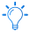
The bulb is the most distinctive, ownable part of the logo. Because a full wordmark is 8.75 : 1 — far too wide for an app icon, avatar, or favicon — the bulb steps forward as the brand’s compact symbol.
→ It anchors the adaptive square & circle marks further down this page.
The wordmark’s soft, circular letterforms set the tone. For supporting text, pair with a friendly humanist companion (this page uses Quicksand for display and Nunito for body).
Keep a margin of at least the height of the capital C free of other elements on every side.
Don’t let the wordmark fall below 120 px / 32 mm wide. Below that, switch to an adaptive mark or the bulb.
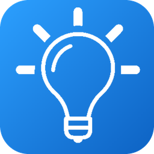
96 pxBuilt entirely from the real logo artwork — same letterforms, same gradient — reflowed so the brand stays legible and full in a square tile or a round avatar.
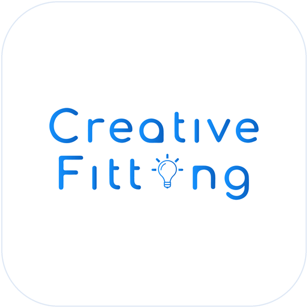
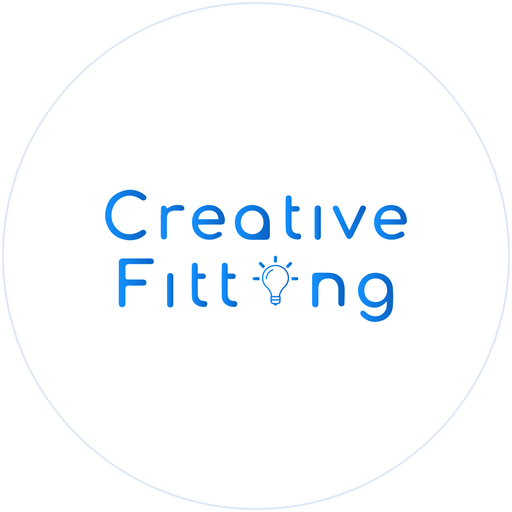
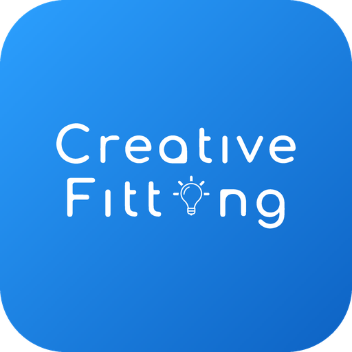
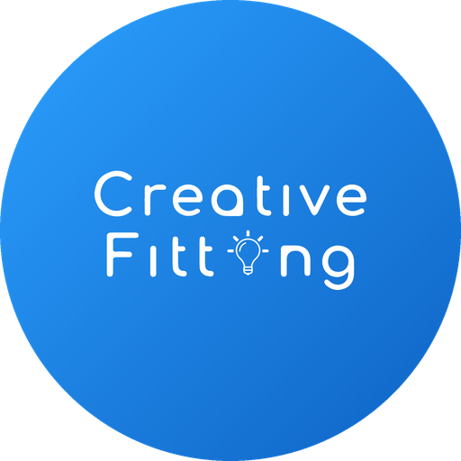
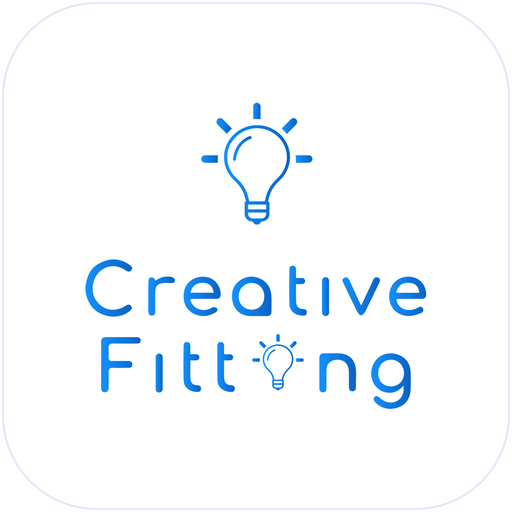
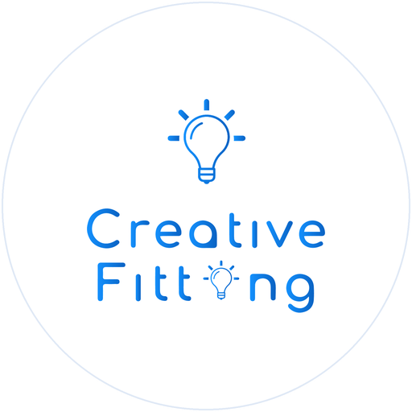
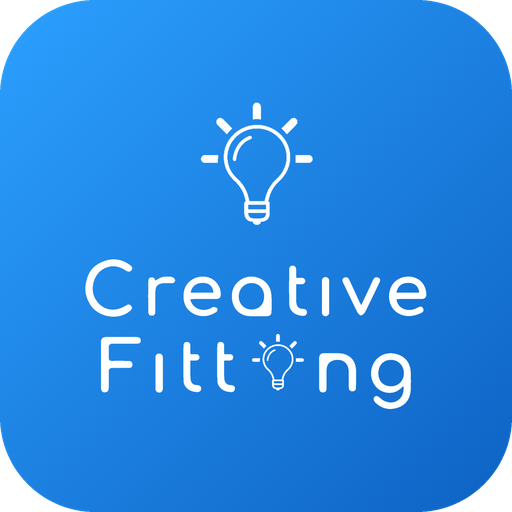
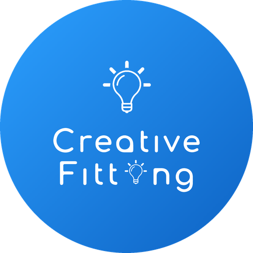
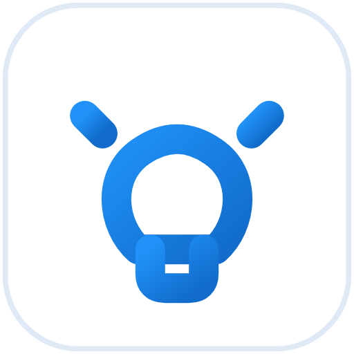
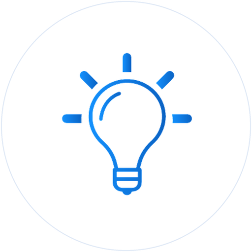
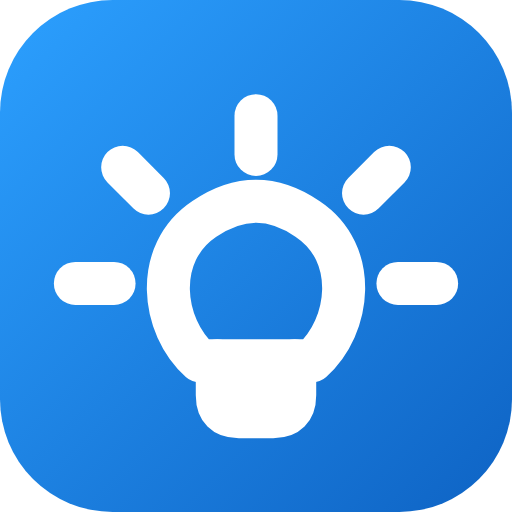
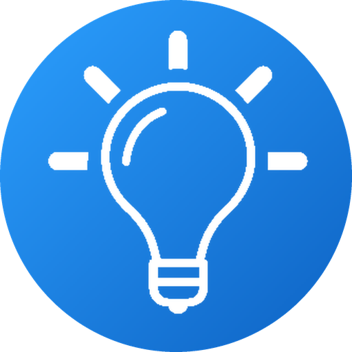
A legibility-led alternate adds conventional dots above the i in “Creative” and the first i in “Fitting”. The lightbulb stays exactly where it is, preserving the signature idea.
{kind=link}
{kind=link}
{kind=link}
{kind=link}